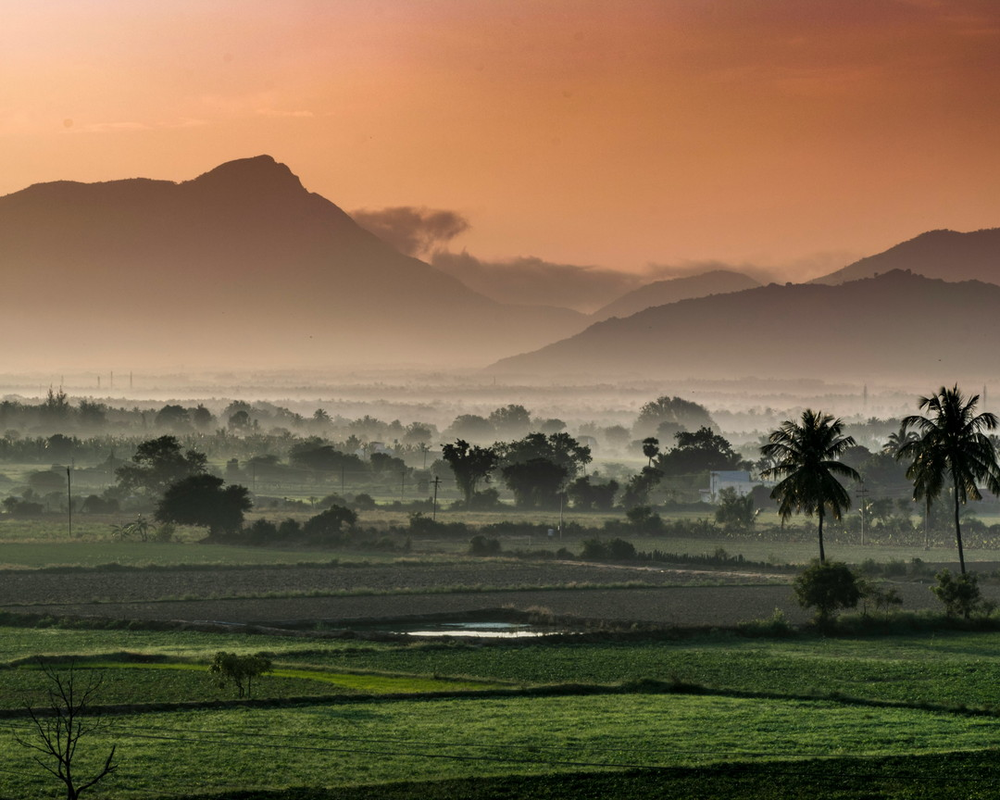

Accelerator Workshop · India 2026
Enrollment extended
Coimbatore, Tamil Nadu, India
19 to 30 October 2026
10 days of hands-on training at the Save Soil farm
New closing time on the countdown below
In collaboration with Isha Outreach
Photograph: Remi Clinton / Unsplash